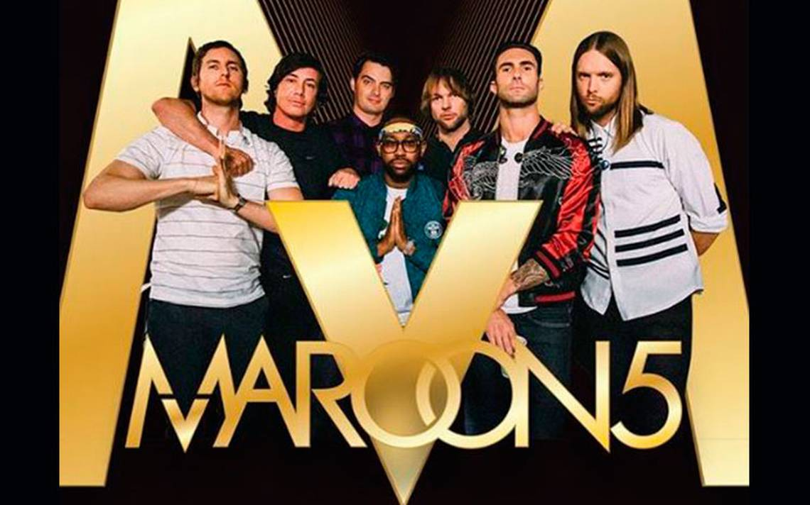

Maroon 5

Biografía
Maroon 5 es una banda musical de pop rock estadounidense. Desde su debut en 2001, la banda ha vendido más de 30 millones de álbumes y 48 millones de sencillos mundialmente. Ganadores de tres Premios Grammy y trece nominaciones, la banda ha lanzado siete álbumes de estudio: Songs About Jane (2002), It Won't Be Soon Before Long (2007), Hands All Over (2010), Overexposed (2012), V (2014), Red Pill Blues (2018) y su reciente álbum Jordi (2021).
Discografía
Songs about Jane (2002)
- Harder To Breathe
- This Love
- Shiver
- She Will Be Loved
- Tangled
- The Sun
- Must Get Out
- Sunday Morning
- Secret
- Through With You
- Not Coming Home
- Sweetest Goodbye
It won't be soon before long (2007)
- If I Never See Your Face Again
- Makes Me Wonder
- Little Of Your Time
- Wake Up Call
- Won't Go Home Without You
- Nothing Lasts Forever
- Can't Stop
- Goodnight Goodnight
- Not Falling Apart
- Kiwi
- Better That We Break
- Back At Your Door
Hands all over (2010)
- Misery
- Give a Little More
- Stutter
- Don't Know Nothing
- Never Gonna Leave This Bed
- I Can't Lie
- Hands All Over
- How
- Get Back in My Life
- Just a Feeling
- Runaway
- Out of Goodbyes - con Lady Antebellum
Overexposed (2012)
- One More Night
- Payphone - con Wiz Khalifa
- Daylight
- Lucky Strike
- The Man Who Never Lied
- Love Somebody
- Lady Killer
- Fortune Teller
- Sad
- Tickets
- Doin' Dirt
- Beautiful Goodbye
V (2014)
- Maps
- Animals
- It was always you
- Unkiss me
- Sugar
- Leaving California
- In your pocket
- New love
- Coming back for you
- Feelings
- My heart is open - con Gwen Stefani
Singles (2015)
- This love
- Payphone
- She will be loved
- One more night
- Moves like Jagger
- Wake up call
- Misery
- Maps
- Makes me wonder
- Animals
- Daylight
- Sugar
Red pill blues (2017)
- Best 4 u
- What lovers do - con SZA
- Wait
- Lips on you
- Bet my heart
- Help me out - con Julia Michaels
- Who I am - con LunchMoney Lewis
- Whiskey - con A$AP Rocky
- Girls like you
- Closure
JORDI (2021)
- Beautiful mistakes - con Megan Thee Stallion
- Lost
- Echo - con Blackbear
- Lovesick
- Remedy - con Stevie Nicks
- Seasons
- One light - con Bantu
- Convince me otherwise - con H.E.R.
- Nobody's love
- Can't you leave alone - con Juice WRLD
- wMemories